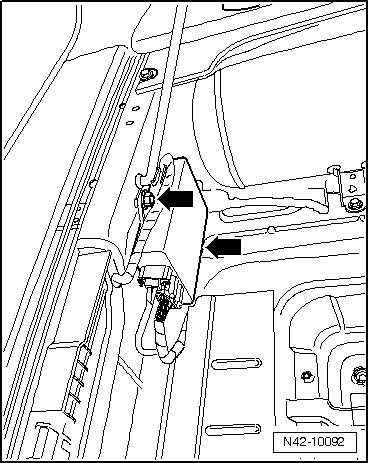

Rear Suspension
Stabilizer Decoupling Control Module
Component location:
The control module is installed beneath the cover for spare wheel at lock carrier.
Removing
- Open cover for spare wheel.
- Disconnect electrical connection between control module and body.
- Remove nuts - arrows - and remove control module.

Installing
Installation is performed in the reverse order of removal.
If control module was replaced, coding must be adapted using the vehicle diagnosis, testing and information system (VAS 5051).
- Code control module.